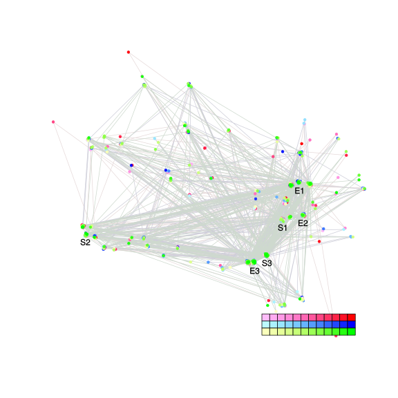
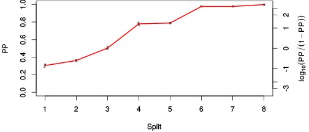
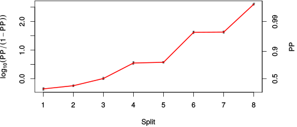

| chain # | burnin | subsample | Iterations (remaining) | command line | subdirectory | directory |
|---|---|---|---|---|---|---|
| 1 | 10000 | 1 | 90000 | /usr/local/bali-phy-3.0-beta2/bin/bali-phy E7_AA_red3_v2_all4Manatees_BetaGamma.fas -s 68435 -n E7_AA_red3_v2_all4Manatees_BetaGamma_c1 | E7_AA_red3_v2_all4Manatees_BetaGamma_c1-1 | /home/willemse/data/trees/BaliPhy/E7/red3_v2 |
| 2 | 10000 | 1 | 90000 | /usr/local/bali-phy-3.0-beta2/bin/bali-phy E7_AA_red3_v2_all4Manatees_BetaGamma.fas -s 82829 -n E7_AA_red3_v2_all4Manatees_BetaGamma_c2 | E7_AA_red3_v2_all4Manatees_BetaGamma_c2-1 | /home/willemse/data/trees/BaliPhy/E7/red3_v2 |
| 3 | 10000 | 1 | 90000 | /usr/local/bali-phy-3.0-beta2/bin/bali-phy E7_AA_red3_v2_all4Manatees_BetaGamma.fas -s 10823 -n E7_AA_red3_v2_all4Manatees_BetaGamma_c3 | E7_AA_red3_v2_all4Manatees_BetaGamma_c3-1 | /home/willemse/data/trees/BaliPhy/E7/red3_v2 |
| P(data|M) = -2178.608 +- 0.248 | Complete sample: 963 topologies | 95% Bayesian credible interval: 121 topologies |
Phylogeny Distribution

| Partition support: Summary |
| Partition support graph: SVG |
{kind=link}
| 50% consensus | Newick (+PP) | SVG | |||||
| 66% consensus | Newick (+PP) | SVG | |||||
| 80% consensus | Newick (+PP) | SVG | |||||
| 90% consensus | Newick (+PP) | SVG | |||||
| 95% consensus | Newick (+PP) | SVG | |||||
| 99% consensus | Newick (+PP) | SVG | |||||
| 100% consensus | Newick (+PP) | SVG | |||||
| MAP | Newick (+PP) | SVG | |||||
| greedy | Newick (+PP) | SVG |
{kind=link}
{kind=link}
{kind=link}
{kind=link}
{kind=link}
{kind=link}
{kind=link}
{kind=link}
Alignment Distribution
Partition 1
| Diff | Min. %identity | # Sites | Constant | Informative | ||||
|---|---|---|---|---|---|---|---|---|
| Initial | FASTA | HTML | Diff | 4.17% | 117 | 1 (0.855%) | 88 (75.2%) | |
| Best (WPD) | FASTA | HTML | AU | 17.5% | 193 | 8 (4.15%) | 74 (38.3%) |
Mixing
{kind=link}
{kind=link}
| burnin (scalar) | ESS (scalar) | ESS (partition) | ASDSF | MSDSF | PSRF-CI80% | PSRF-RCF |
|---|---|---|---|---|---|---|
| 703 | 2963 | 1647.470 | 0.007 | 0.015 | 1.001 | 1.004 |
Projection of RF distances for the first 3 chains3D | Variation of split PPs across chains |
Scalar variables
| Statistic | Median | 95% BCI | ACT | ESS | burnin | PSRF-CI80% | PSRF-RCF |
|---|---|---|---|---|---|---|---|
| prior | -253.4 | (-299, -213.3) | 35.74 | 7554 | 446 | 1 | 1.004 |
| prior_A1 | -248.4 | (-291.4, -210) | 29.08 | 9285 | 324 | 1.001 | 1.003 |
| likelihood | -2155 | (-2179, -2130) | 28.66 | 9422 | 304 | 1.001 | 1.004 |
| logp | -2408 | (-2444, -2376) | 27.02 | 9991 | 324 | 1 | 1.001 |
| Heat.beta | 1 | ||||||
| Scale1 | 5.107 | (2.734, 8.482) | 1.047 | 257763 | 138 | 1 | 0.9983 |
| S1.F.pi.A | 0.06101 | (0.04366, 0.08013) | 8.466 | 31891 | 197 | 1 | 1 |
| S1.F.pi.R | 0.06444 | (0.04428, 0.08658) | 8.229 | 32810 | 461 | 1 | 0.9983 |
| S1.F.pi.N | 0.03023 | (0.0182, 0.04382) | 8.523 | 31679 | 469 | 0.9996 | 0.9974 |
| S1.F.pi.D | 0.04798 | (0.03155, 0.06594) | 10.1 | 26722 | 348 | 1 | 1.002 |
| S1.F.pi.C | 0.04454 | (0.02644, 0.06515) | 7.693 | 35098 | 472 | 1 | 0.9956 |
| S1.F.pi.Q | 0.04542 | (0.03114, 0.06111) | 8.538 | 31623 | 249 | 0.9998 | 0.9991 |
| S1.F.pi.E | 0.09111 | (0.06803, 0.1156) | 11.34 | 23811 | 279 | 1 | 0.9992 |
| S1.F.pi.G | 0.08728 | (0.06085, 0.1157) | 10.71 | 25218 | 371 | 0.9999 | 1.003 |
| S1.F.pi.H | 0.03615 | (0.02223, 0.05208) | 7.812 | 34564 | 548 | 0.9999 | 0.9997 |
| S1.F.pi.I | 0.04093 | (0.02625, 0.05735) | 8.536 | 31632 | 306 | 1 | 0.9985 |
| S1.F.pi.L | 0.09473 | (0.06941, 0.1222) | 12.44 | 21702 | 366 | 0.9997 | 0.9954 |
| S1.F.pi.K | 0.02897 | (0.01735, 0.04183) | 7.784 | 34687 | 388 | 1 | 0.999 |
| S1.F.pi.M | 0.004326 | (0.000853, 0.009471) | 8.665 | 31160 | 525 | 1 | 1.003 |
| S1.F.pi.F | 0.04324 | (0.02666, 0.06102) | 8.524 | 31676 | 354 | 1 | 0.9953 |
| S1.F.pi.P | 0.04377 | (0.02641, 0.06343) | 8.912 | 30295 | 703 | 1 | 1.001 |
| S1.F.pi.S | 0.06005 | (0.04256, 0.07881) | 8.145 | 33150 | 253 | 0.9999 | 0.999 |
| S1.F.pi.T | 0.05394 | (0.03655, 0.07242) | 8.372 | 32249 | 402 | 1 | 0.9982 |
| S1.F.pi.W | 0.003722 | (8.324e-05, 0.01049) | 9.948 | 27141 | 576 | 0.9994 | 1.002 |
| S1.F.pi.Y | 0.04132 | (0.0246, 0.0604) | 8.688 | 31077 | 162 | 1.001 | 0.9925 |
| S1.F.pi.V | 0.06643 | (0.04831, 0.08629) | 8.128 | 33219 | 195 | 1 | 1.001 |
| I1.RS07.meanIndelLengthMinus1 | 2.247 | (1.271, 3.561) | 16.81 | 16065 | 145 | 1 | 1.001 |
| I1.RS07.logLambda | -3.622 | (-4.068, -3.176) | 12.99 | 20791 | 171 | 1 | 1.003 |
| |A1| | 169 | (154, 184) | 91.13 | 2962 | 513 | 0.9344 | 1 |
| #indels1 | 33 | (26, 40) | 34.87 | 7742 | 324 | 0.931 | 1.003 |
| |indels1| | 108 | (88, 130) | 25.86 | 10439 | 326 | 0.9643 | 0.998 |
| #substs1 | 393 | (378, 406) | 47.19 | 5721 | 350 | 0.9828 | 0.9995 |
| Scale1*|T| | 6.207 | (5.465, 7.008) | 8.481 | 31835 | 113 | 0.9997 | 0.9998 |
| |A| | 169 | (154, 184) | 91.13 | 2962 | 513 | 0.9344 | 1 |
| #indels | 33 | (26, 40) | 34.87 | 7742 | 324 | 0.931 | 1.003 |
| |indels| | 108 | (88, 130) | 25.86 | 10439 | 326 | 0.9643 | 0.998 |
| #substs | 393 | (378, 406) | 47.19 | 5721 | 350 | 0.9828 | 0.9995 |
| |T| | 1.217 | (0.6273, 1.936) | 1 | 270003 | 142 | 1 | 0.9985 |